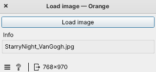
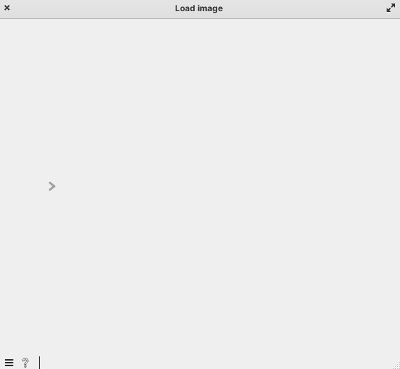

Getting Started
In this segment, we’ll familiarize ourselves with fundamental concepts for constructing a simple widget.
A Preview of the Finished Widget
Below, there is an image of a simple image upload widget. In it, we can see a button and an info box displaying the file name. This will be the final outcome.
Final Implementation
By presenting the complete code upfront, you can get an overview of the structure, components, in the widget’s final implementation.
import os
import numpy as np
from PIL import Image
from AnyQt.QtWidgets import QFileDialog
from orangewidget.utils.signals import summarize, PartialSummary
from Orange.widgets.settings import Setting
from Orange.widgets.widget import OWWidget, Output, Msg
from Orange.widgets import gui
@summarize.register
def summarize_ndarray(a: np.ndarray):
return PartialSummary(f"{a.shape[0]}x{a.shape[1]}", f"Image of size {a.shape[0]}x{a.shape[1]}")
class LoadFile(OWWidget):
name = "Load image"
description = "Load image from local directory"
icon = "icons/uploadImage.png"
priority = 100
keywords = "data, load, read, open, image"
category = "Example - documentation"
class Outputs:
image = Output("image", np.ndarray, default=True)
filename = Setting(None)
want_main_area = False
resizing_enabled = False
def __init__(self):
super().__init__()
gui.button(self.controlArea, self, label="Load image", callback=self.browse_file)
box = gui.widgetBox(self.controlArea, "Info")
self.label = gui.widgetLabel(box, "", labelWidth=300)
self.load_image()
def browse_file(self):
filename, _ = QFileDialog.getOpenFileName(
self, 'Open File', '', 'Image Files (*.gif *.jpg *.jpeg *.png *.svg);;All Files (*)'
)
if filename is None:
return
self.filename = filename
self.load_image()
def load_image(self):
if self.filename is None:
self.label.setText("No file selected")
img = None
else:
path = os.path.split(self.filename)
name = path[1]
self.label.setText(name)
img = np.array(Image.open(self.filename))
self.Outputs.image.send(img)
if __name__ == "__main__":
from Orange.widgets.utils.widgetpreview import WidgetPreview
WidgetPreview(LoadFile).run()
Creating an Empty Widget
In this section, we will create a basic widget from scratch. Widget consists of three key meta-data elements: name, description, and icon. With just these three components, we can already define a functional widget.
from Orange.widgets.widget import OWWidget
class LoadFile(OWWidget):
name = "Load image"
description = "Load image from local directory"
icon = "icons/uploadImage.png"
Tip
💡 The widget inherits from the OWWidget base class.
Running the code in IDE
Add this at the end of your code.
if __name__ == "__main__":
from Orange.widgets.utils.widgetpreview import WidgetPreview
WidgetPreview(LoadFile).run()
Now we run the file and see our empty widget displayed:
Running the Widget in Orange
After running the orange-canvas command, the widget is instantly displayed in the toolbox.

See also